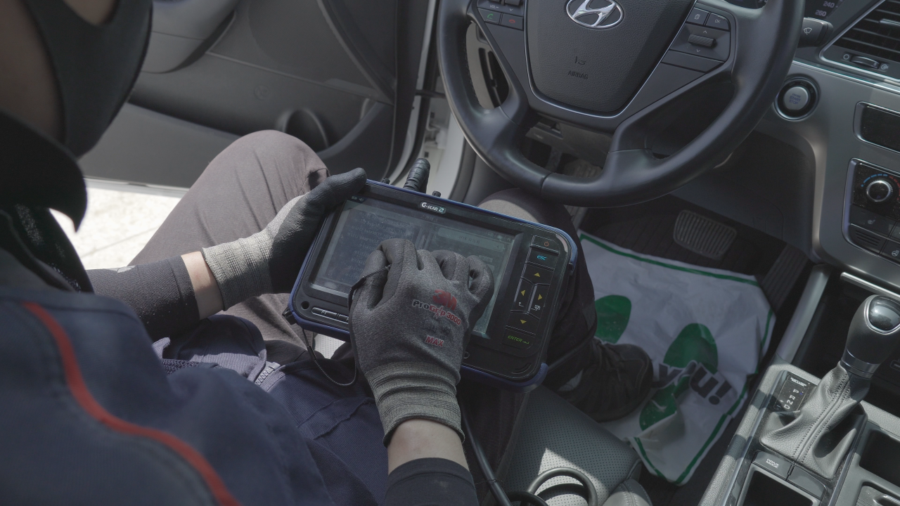

Vehicles sold in Carbay Korea Platform must pass Carbay Korea's specialized vehicle performance test with Sanitizing for Colvid-19
The core of the online export platform - CAR CHECK of CARBAY KOREA.
Carbay Korea's inspection team is inspecting the performance of the sold vehicle
Carbay Korea directly checks the basic informations, option's information, and the status of the product,
Even checks whether the information registered by seller is correct or not.
If the product information is different, payment will not be sent to the seller.
We use a high-performance vehicle scanner to make sure there are no internal problems with this vehicle. If the vehicle does not pass the scanning test, it cannot proceed to the next step, 'shipment'.
And all the money will be refunded to the buyer.

Carbay Korea's vehicle scanner equipment
Vehicles sold in Carbay Platform to prevent Colvid-19 virus,
After passing all inspections, it will be shipped after K-Sanitizing. In addition, paint checks are carried out to determine whether there are any accidents on vehicles for specific countries.
Let you check the video for the CAR CHECK & Sanitizing Service.